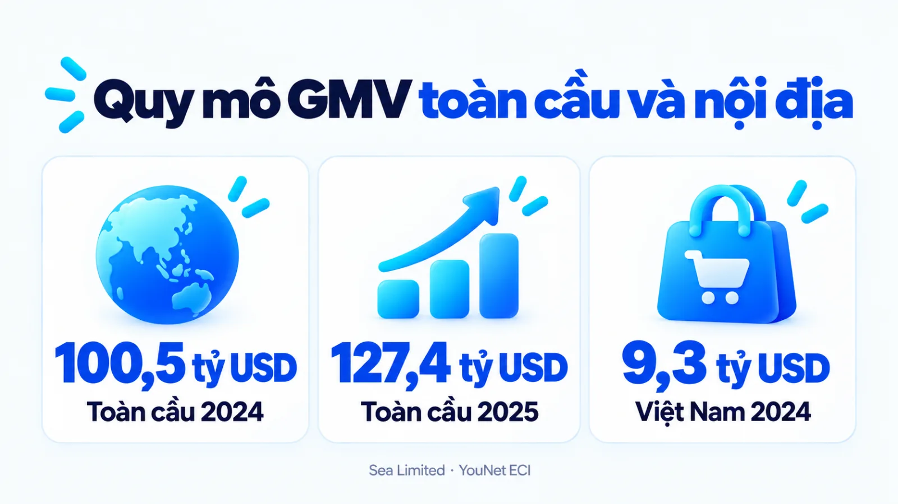
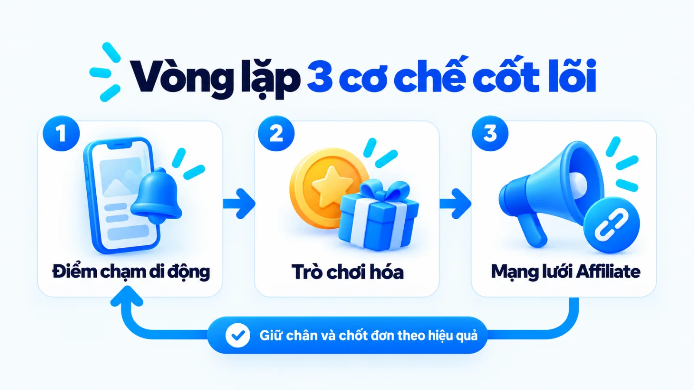
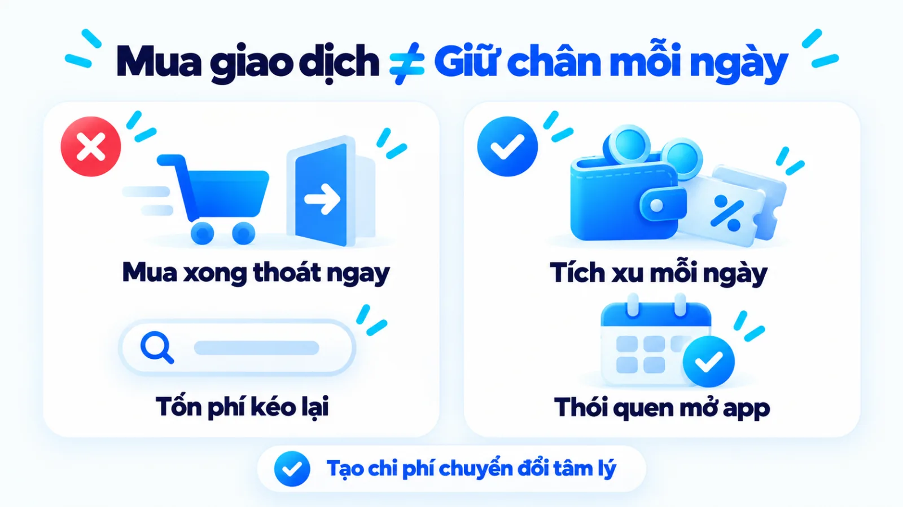
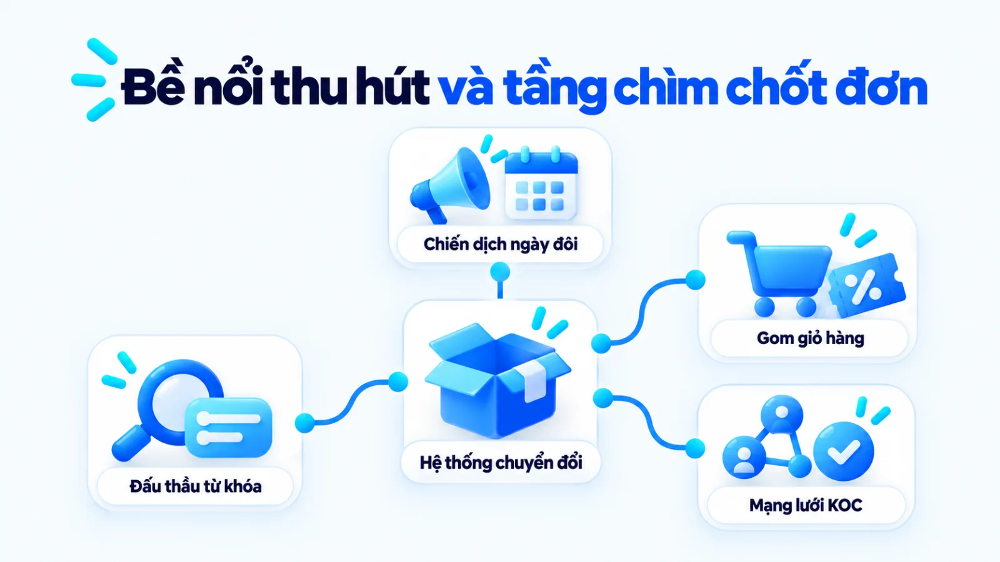
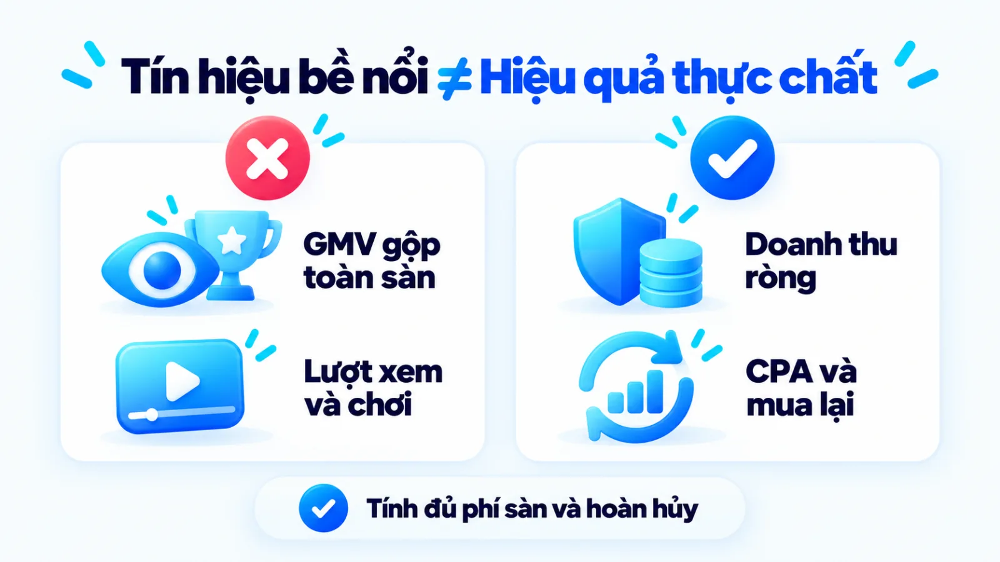
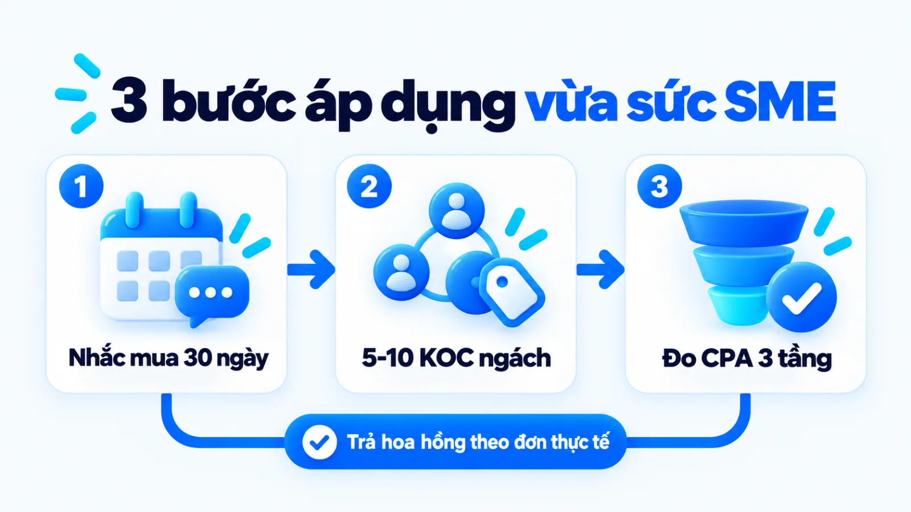
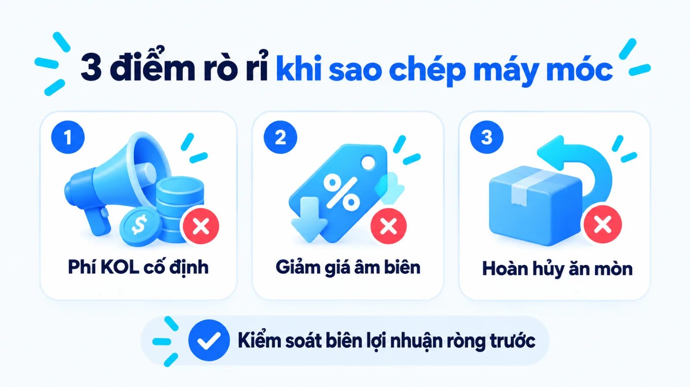

Chiến lược Digital Marketing của Shopee cho SME
Chiến lược Digital Marketing của Shopee là hệ thống phối hợp giữa trải nghiệm mua sắm ưu tiên thiết bị di động, các tính năng giải trí giữ chân người dùng trong ứng dụng và mạng lưới tiếp thị liên kết tính phí theo đơn hàng thực tế. Khi quan sát các đợt khuyến mãi ngày đôi hay chiến dịch đại sứ thương hiệu rầm rộ, nhiều chủ doanh nghiệp dễ lầm tưởng sức mạnh của nền tảng này nằm ở ngân sách quảng cáo đại chúng khổng lồ. Nếu sao chép phần bề nổi đắt đỏ đó mà thiếu cơ chế giữ chân khách cũ và kiểm soát chi phí chuyển đổi bên dưới, doanh nghiệp nhỏ rất dễ rơi vào cảnh có nhiều lượt xem nhưng âm lợi nhuận ròng. Tôi là Lê Tuấn Việt, Marketing Leader tại TAKI Group. Trong bài viết này, tôi mổ xẻ các dữ kiện công khai về Shopee, làm rõ ba cơ chế vận hành cốt lõi và xác định những nguyên tắc mà doanh nghiệp vừa và nhỏ có thể chọn lọc áp dụng theo đúng giới hạn nguồn lực.
- Đăng ngày
- Cập nhật

Tóm tắt nhanh
- Tiếp thị số của Shopee tạo lợi thế nhờ kết hợp điểm chạm di động, trò chơi hóa giữ chân người dùng và mạng lưới tiếp thị liên kết trả phí theo đơn thành công.
- Quy mô tổng giá trị giao dịch (GMV) hàng trăm tỷ USD phản ánh sức hút toàn sàn, nhưng chưa chứng minh biên lợi nhuận ròng của từng nhà bán hàng sau khi trừ phí sàn và hoàn hủy.
- Doanh nghiệp vừa và nhỏ không nên sao chép việc đốt tiền thuê đại sứ hạng A hay trợ giá sâu toàn diện khi chưa có kịch bản chăm sóc khách mua lặp lại để bù đắp chi phí.
- Hướng áp dụng an toàn cho ngân sách hẹp là thiết lập điểm chạm nhắc mua lại định kỳ, hợp tác với nhóm người sáng tạo nội dung ngách chia sẻ hoa hồng và đo lường chuyển đổi theo ba tầng.
Mục lục bài viết8 phần
Chiến lược Digital Marketing của Shopee là gì?
Chiến lược Digital Marketing của Shopee là hệ thống kết hợp trải nghiệm mua sắm ưu tiên thiết bị di động, giải trí hóa tương tác trong ứng dụng và mạng lưới tiếp thị liên kết tính phí theo hiệu quả để chuyển hóa lưu lượng truy cập thành đơn hàng. Thay vì chỉ dựa vào quảng cáo đại chúng, nền tảng này thiết kế các điểm chạm giữ chân lặp lại và khóa hành vi mua tại điểm chốt đơn.
Hồ sơ dữ kiện công khai toàn cầu và tại Việt Nam
Quy mô giao dịch của Shopee giai đoạn 2024 đến 2025
Theo báo cáo tài chính do công ty mẹ Sea Limited tự công bố trên các thị trường Đông Nam Á, Đài Loan và Brazil, GMV (Gross Merchandise Value, tức tổng giá trị hàng hóa giao dịch) của Shopee năm 2024 đạt 100,5 tỷ USD (tăng 28,0% so với năm 2023) với 10,9 tỷ đơn hàng gộp (tăng 33,0%). Sang năm 2025, GMV toàn sàn đạt 127,4 tỷ USD (tăng 26,8%), đóng góp chính vào 22,9 tỷ USD doanh thu theo chuẩn GAAP (nguyên tắc kế toán được chấp nhận chung) của Sea Limited.
- 127,4 tỷ USD
- GMV toàn cầu của Shopee năm 2025 theo Sea Limited
- 9,3 tỷ USD
- GMV của sàn tại Việt Nam năm 2024 theo YouNet ECI
- 66,7%
- Thị phần GMV trong nhóm 4 sàn tại Việt Nam năm 2024

Bối cảnh gia nhập sau và bài toán đổi hệ tiêu chí
Khi bước vào thị trường thương mại điện tử Đông Nam Á và Việt Nam, Shopee là người đến sau so với các sàn bán lẻ trực tuyến đời đầu vốn tập trung vào giao diện máy tính để bàn. Nếu đối đầu trực diện trên cùng hệ tiêu chí giao diện web máy tính và danh mục hàng hóa truyền thống, người đi sau thường phải chịu chi phí thu hút khách hàng mới rất cao.
Lựa chọn chiến lược của Shopee là xoay trục tiêu chí cạnh tranh sang Mobile commerce (thương mại di động), ưu tiên giao diện ứng dụng điện thoại kết hợp chính sách hỗ trợ vận chuyển có điều kiện để hạ thấp rào cản dùng thử lần đầu của người tiêu dùng đại chúng.
Cách tiếp cận này trái ngược hoàn toàn với hướng xây dựng định vị cao cấp và hệ sinh thái phần cứng khép kín từng được mổ xẻ trong bài chiến lược marketing của Apple. Trong khi thương hiệu thiết bị cao cấp bảo vệ biên lợi nhuận bằng việc hạn chế giảm giá, mô hình sàn thương mại điện tử đại chúng lại cần mật độ tương tác cao, danh mục rộng và tần suất mở ứng dụng hàng ngày để tối ưu chi phí vận hành.
Phạm vi dữ liệu công khai tại thị trường Việt Nam
Tại thị trường nội địa, báo cáo nghiên cứu năm 2024 của YouNet ECI (đo lường dữ liệu giao dịch trên 4 sàn gồm Shopee, TikTok Shop, Lazada và Tiki bằng phương pháp xử lý dữ liệu lớn EcomHeat) ghi nhận GMV của Shopee đạt 9,3 tỷ USD, chiếm 66,7% thị phần GMV trong nhóm 4 sàn lớn nhất Việt Nam.
Cùng mạch tăng trưởng chung của toàn ngành, báo cáo năm 2025 của nền tảng phân tích dữ liệu Metric (thống kê trên 4 sàn Shopee, Lazada, Tiki và TikTok Shop, đã loại trừ đơn ảo và quà tặng bất thường) cho biết tổng doanh số trên 4 sàn bán lẻ trực tuyến lớn tại Việt Nam đạt 429,7 nghìn tỷ đồng, tăng 34,75% so với năm 2024.
Khi đọc các con số trên để lập chiến lược Digital Marketing cho SME (doanh nghiệp vừa và nhỏ), người làm nghề cần nhìn rõ giới hạn của dữ liệu. Con số 10,9 tỷ đơn hàng gộp toàn cầu của Sea Limited hay 66,7% thị phần GMV tại Việt Nam của YouNet ECI đều là chỉ số quy mô giao dịch bề nổi trên sàn, chưa trừ tỷ lệ đơn hoàn hủy và không phản ánh lợi nhuận ròng của từng gian hàng.
Thị phần dẫn đầu này cũng không chỉ đến từ kỹ thuật tiếp thị số, mà còn dựa vào nguồn vốn trợ giá giai đoạn đầu của công ty mẹ và hạ tầng giao vận tích hợp mà một doanh nghiệp độc lập không thể sao chép nguyên bản.
Ba cơ chế tiếp thị số cốt lõi của Shopee
Hệ thống tiếp thị số của Shopee vận hành dựa trên ba cơ chế liên hoàn: cá nhân hóa điểm chạm di động để kéo người dùng quay lại, giải trí hóa mua sắm để kéo dài thời gian lưu trú và mở rộng mạng lưới tiếp thị liên kết kết hợp phát trực tiếp để chốt đơn. Ba cơ chế này phối hợp nhằm giảm sự phụ thuộc vào chi phí mua lưu lượng lạnh từ bên ngoài.
- Điểm chạm di động: Kích hoạt nhu cầu mở ứng dụng bằng thông báo đẩy và gợi ý sản phẩm khớp lịch sử tìm kiếm của từng cá nhân.
- Giải trí hóa mua sắm (Shoppertainment): Giữ chân người dùng ở lại lâu hơn trong ứng dụng qua hệ thống trò chơi tích xu, đổi mã giảm giá và tương tác hàng ngày.
- Tiếp thị liên kết và phát trực tiếp: Chuyển hóa lượt xem thành đơn hàng bằng bằng chứng xã hội từ người sáng tạo nội dung và ưu đãi giới hạn thời gian thực.

Cơ chế 1: Tối ưu điểm chạm di động và cá nhân hóa
Trên màn hình điện thoại nhỏ, mỗi thao tác thừa đều làm tăng tỷ lệ rời bỏ giỏ hàng. Shopee thiết kế luồng di chuyển từ lúc người dùng chạm vào Push Notification (thông báo đẩy trên điện thoại) đến lúc xem đánh giá và áp mã thanh toán chỉ gói gọn trong vài lần chạm. Thuật toán liên tục ghi nhận từ khóa tìm kiếm và lịch sử mua hàng để sắp xếp lại trang chủ theo nguyên lý AI personalization (cá nhân hóa bằng trí tuệ nhân tạo).
Ở tầng hiển thị trả phí, tài liệu chính thức năm 2025 của Shopee Ads tại Việt Nam xác nhận hệ thống hỗ trợ nhà bán hàng đặt giá thầu đưa sản phẩm và gian hàng lên vị trí ưu tiên trong kết quả tìm kiếm, trang khám phá và luồng phát trực tiếp trên ứng dụng lẫn website. Nhờ đón đầu người dùng ngay khi họ mở ứng dụng với ý định mua rõ ràng, khoảng cách tới quyết định thanh toán ngắn hơn nhiều so với quảng cáo hiển thị ngoài sàn.
Cơ chế 2: Shoppertainment và trò chơi hóa giữ chân
Khác với hành vi mua sắm thuần giao dịch (chỉ mở ứng dụng khi cần mua một món đồ cụ thể rồi thoát ngay), Shopee thúc đẩy xu hướng Shoppertainment (mua sắm kết hợp giải trí) thông qua Gamification (trò chơi hóa các hoạt động phi trò chơi). Người dùng mở ứng dụng mỗi ngày để tưới cây, lắc xu hoặc điểm danh nhận mã miễn phí vận chuyển ngay cả khi chưa có ý định mua hàng rõ ràng.
Tại điểm chạm sử dụng thực tế, các phần thưởng nhỏ này tạo ra chi phí chuyển đổi tâm lý: khi trong ví đã có sẵn lượng xu sắp hết hạn và mã giảm giá vừa săn được, người mua có xu hướng chọn thanh toán ngay trên sàn thay vì mở sang ứng dụng khác để so sánh giá.
Để tách lớp giá trị giữ chân khỏi công năng giao dịch thuần túy, có thể hình dung cơ chế này giống như cách khu trung tâm thương mại bố trí rạp chiếu phim và khu vui chơi xen kẽ quầy hàng để giữ khách đi dạo lâu hơn. Phép tương tự này chỉ dùng để làm rõ cơ chế kéo dài thời gian lưu trú tại điểm bán, không thay thế cho dữ liệu đo lường động cơ mua sắm thực tế.
Hạn chế cần nhìn thẳng là một bộ phận lớn lượt tương tác trong minigame đến từ nhóm người dùng nhạy giá chỉ vào săn xu miễn phí, nên thời gian lưu trú cao không tự động đồng nghĩa với lòng trung thành thương hiệu bền vững.

Cơ chế 3: Mạng lưới Affiliate và Live kéo chuyển đổi
Khi chi phí quảng cáo trên mạng xã hội ngày càng tăng, Shopee dịch chuyển mạnh sang mô hình Affiliate marketing (tiếp thị liên kết) kết hợp Influencer marketing (tiếp thị qua người ảnh hưởng). Theo thông tin chính thức cập nhật năm 2025 do Chương trình Tiếp thị liên kết Shopee Việt Nam tự công bố, đối tác sáng tạo nội dung và người dùng chỉ mất khoảng 5 phút đăng ký trực tuyến để tạo đường dẫn giới thiệu sản phẩm và nhận hoa hồng theo đơn hàng thành công.
Song song đó, hệ thống học liệu năm 2025 trên cổng Kênh Người Bán Học viện Shopee Uni cung cấp hướng dẫn miễn phí giúp người bán tự vận hành gian hàng, tối ưu Shopee Live (tính năng phát trực tiếp bán hàng) và các công cụ khuyến mãi nội sàn.
Sự kết hợp giữa mạng lưới KOL (Key Opinion Leader, tức người có sức ảnh hưởng lớn) cùng KOC (Key Opinion Consumer, tức người tiêu dùng có sức ảnh hưởng) và tính năng Shopee Live tạo ra vòng lặp chuyển đổi khép kín. KOC đăng video trải nghiệm sản phẩm trên các kênh social media marketing (tiếp thị mạng xã hội) để khơi gợi nhu cầu và gắn đường dẫn đưa người xem về thẳng giỏ hàng hoặc phiên phát trực tiếp.
Với cơ chế này, phần lớn rủi ro chi phí hiển thị được chuyển sang chi phí biến đổi tính theo hiệu quả đơn hàng thực tế. Chọn đúng cơ chế quan trọng hơn đốt ngân sách.
Tín hiệu bề nổi và cách phân bổ nguồn lực
Các chiến dịch đại sứ thương hiệu hạng A và ngày hội mua sắm định kỳ hàng tháng là phần nổi thu hút sự chú ý, nhưng hiệu quả kinh doanh thực tế lại nằm ở cấu trúc gom nhu cầu và hệ thống phân bổ mã giảm giá có điều kiện. Nếu chỉ nhìn vào độ phủ truyền thông mà không thấy phễu hứng chuyển đổi phía sau, doanh nghiệp rất dễ phân bổ sai ngân sách.

Tách chiến dịch đại sứ đại chúng với phễu chuyển đổi
Nhiều người làm marketing khi phân tích Shopee thường dành phần lớn thời lượng nói về các bài hát quảng cáo bắt tai hoặc việc mời ngôi sao quốc tế và nghệ sĩ nổi tiếng làm đại sứ thương hiệu. Trong cấu trúc vận hành của một nền tảng đã đạt quy mô 10,9 tỷ đơn hàng năm 2024 và chiếm 66,7% thị phần GMV tại Việt Nam, quảng cáo đại sứ đóng vai trò nhắc nhớ thương hiệu ở đỉnh phễu để giữ thói quen nghĩ đến sàn đầu tiên.
Tuy nhiên, nếu không có mạng lưới liên kết Shopee Affiliate phủ rộng các hội nhóm và hệ thống đấu thầu từ khóa Shopee Ads đón ở đáy phễu, độ phủ truyền thông đại chúng đó sẽ không thể tự chuyển hóa thành đơn hàng thực.
Vậy tại sao nhiều doanh nghiệp nhỏ làm theo mô hình kết hợp người nổi tiếng và khuyến mãi lớn lại lỗ nặng? Nguyên nhân cốt lõi nằm ở sự bất đối xứng về cấu trúc thu hồi vốn: sàn thương mại điện tử thu phí trên hàng triệu giao dịch đa ngành hàng và giữ người dùng ở lại hệ sinh thái cho các lần mua sau, trong khi một cửa hàng đơn lẻ chỉ bán vài dòng sản phẩm cố định.
Khi doanh nghiệp nhỏ chi một khoản phí cố định lớn để thuê người nổi tiếng đăng bài nhận diện nhưng trang đích lại tải chậm, thiếu đánh giá thật và không có kịch bản thu thập dữ liệu khách hàng, toàn bộ lưu lượng truy cập đắt đỏ đó sẽ trôi tuột ngay sau một lần nhấp.
Cách ngày hội mua sắm gom nhu cầu và tối ưu chi phí
Các chiến dịch ngày hội mua sắm thực chất là cơ chế định khung thời điểm: người tiêu dùng chủ động thêm sản phẩm vào giỏ hàng từ trước và chờ đúng khung giờ cao điểm để áp mã thanh toán. Cách gom nhu cầu này giúp sàn và các nhà bán hàng lớn tập trung ngân sách truyền thông, chuẩn bị tồn kho và điều phối nhân sự vận hành vào những đợt ngắn hạn.
Dù vậy, giới hạn cần lưu ý là doanh số tăng vọt trong đợt khuyến mãi một phần lớn đến từ hiệu ứng dồn đơn (khách hoãn mua ngày thường để đợi ngày giảm giá), chứ không hoàn toàn là nhu cầu mới phát sinh thêm trên thị trường.
Ví dụ biên tập, không phải kết quả khách hàng thật
Đối chiếu hai cách phân bổ ngân sách của thương hiệu mỹ phẩm nội địa
Trong tình huống giả định (ví dụ biên tập, không phải kết quả khách hàng thật), một cửa hàng mỹ phẩm tại TP.HCM cần chia ngân sách bán hàng cuối quý. Ở phương án cũ, họ dồn vốn thuê người nổi tiếng làm video nhận diện và giảm giá sâu, khiến khách mua xong rồi rời đi. Khi đổi sang trả hoa hồng theo đơn cho KOC ngách, chạy quảng cáo tìm kiếm nội sàn và nhắn tin chăm sóc sau mua, biên lợi nhuận được giữ vững.
- Phương án cũ
- Dồn vốn thuê đại sứ lẻ và giảm giá sâu dễ lỗ ròng
- Phương án mới
- Chia hoa hồng cho KOC ngách và nhắn tin giữ khách
- Điểm kiểm soát
- Khóa trần chi phí trên mỗi đơn hoàn tất có lãi thực
Bằng chứng và giới hạn dữ liệu công khai
Dữ liệu công khai từ báo cáo tài chính của Sea Limited và các đơn vị nghiên cứu thị trường như YouNet ECI hay Metric xác nhận quy mô giao dịch cùng vị thế thị phần của Shopee, nhưng chưa chứng minh được biên lợi nhuận ròng của từng nhà bán hàng hay tỷ lệ giữ chân tự nhiên khi ngừng trợ giá. Việc tách bạch điều nguồn đã chứng minh và điều chưa có dữ liệu giúp người làm marketing tránh suy diễn quá mức.
Để trả lời câu hỏi tín hiệu lượt truy cập và kỷ lục ngày hội mua sắm chưa chứng minh điều gì, bảng đối chiếu ba cột dưới đây phân tách rõ dữ kiện đã có nguồn xác nhận, cơ chế vận hành được diễn giải trong bài và các giới hạn dữ liệu hoặc khả năng giải thích khác cần lưu ý.
| Mũi nhọn và dữ liệu | Dữ kiện nguồn xác nhận | Diễn giải và giới hạn |
|---|---|---|
| Quy mô GMV trên toàn sàn | Sea Limited công bố GMV Shopee đạt 100,5 tỷ USD (2024) và 127,4 tỷ USD (2025) trên toàn cầu | Chứng tỏ quy mô giao dịch lớn nhưng chưa tách riêng lợi nhuận ròng sau hoàn hủy của từng người bán |
| Thị phần tại Việt Nam | YouNet ECI ghi nhận GMV Shopee năm 2024 đạt 9,3 tỷ USD, chiếm 66,7% thị phần nhóm 4 sàn lớn | Phản ánh vị thế dẫn đầu trên sàn nhưng phụ thuộc cả vào vốn trợ giá và logistics, không chỉ do quảng cáo |
| Tăng trưởng của toàn ngành | Metric thống kê tổng doanh số 4 sàn tại Việt Nam năm 2025 đạt 429,7 nghìn tỷ đồng, tăng 34,75% | Cho thấy sức mua trực tuyến mở rộng nhưng có sự phân hóa mạnh, nhiều gian hàng nhỏ vẫn rời thị trường |
| Hiển thị và tương tác | Shopee Uni và Shopee Ads xác nhận cơ chế ưu tiên tìm kiếm, khám phá, phát trực tiếp và trò chơi | Giúp tăng tần suất mở ứng dụng nhưng chứa tỷ trọng lớn người săn xu nhạy giá, chưa hẳn trung thành |
| Mạng lưới Affiliate | Shopee Affiliate xác nhận quy trình đăng ký trực tuyến khoảng 5 phút để nhận hoa hồng theo đơn | Chuyển rủi ro sang chi phí biến đổi nhưng nếu thiếu kiểm soát nội dung KOC sẽ dễ làm lệch định vị |
Khi đọc bảng đối chiếu trên, cần lưu ý số liệu giữa YouNet ECI và Metric có phạm vi năm và bộ lọc kỹ thuật khác nhau nên không cộng gộp trực tiếp. Quan trọng hơn, hiện chưa có dữ liệu công khai đã kiểm toán tách riêng tỷ lệ chuyển đổi trung bình (CR, tức Conversion Rate) hay tỷ lệ hoàn trả đơn hàng của riêng pháp nhân Shopee Việt Nam.
Tương tự, tỷ lệ giữ chân tự nhiên sau khi ngắt các chương trình trợ giá và mọi con số truyền miệng trên thị trường về tỷ lệ đóng góp đơn hàng chính xác của riêng tính năng trò chơi hóa đều ở trạng thái chưa được xác nhận.

Bài học từ chiến lược Digital Marketing của Shopee
Doanh nghiệp vừa và nhỏ không thể sao chép quy mô trợ giá toàn sàn của Shopee, nhưng hoàn toàn áp dụng được cơ chế thiết kế điểm chạm giữ chân khách cũ, xây dựng mạng lưới cộng tác viên chia sẻ doanh thu và đo lường chuyển đổi đa tầng. Nguyên tắc cốt lõi là thử nghiệm ở quy mô nhỏ, khóa chặt CPA (Cost Per Acquisition, tức chi phí trên mỗi đơn hàng hoặc khách hàng thành công) trước khi mở rộng ngân sách.
Trước khi đi vào quy trình triển khai ba bước cụ thể, bảng chuyển giao dưới đây tổng hợp ba bài học cơ chế rút ra từ Shopee kèm điều kiện phù hợp, ngoại lệ đảo chiều và việc thử nhỏ để người phụ trách marketing đối chiếu với mô hình kinh doanh của mình.
| Bài học cơ chế | Điều kiện và ngoại lệ | Việc thử nhỏ tuần này |
|---|---|---|
| Điểm chạm giữ chân khách | Hợp hàng tiêu dùng, mỹ phẩm mua lại nhanh; đảo chiều với hàng giá trị cao chu kỳ mua dài | Thiết lập tin nhắn nhắc mua lại kèm ưu đãi nhỏ theo chu kỳ dùng cho nhóm khách đã mua lần đầu |
| Mạng lưới KOC chia hoa hồng | Hợp sản phẩm dễ minh họa qua video và biên lãi đủ trả hoa hồng; đảo chiều với dịch vụ B2B phức tạp | Chọn nhóm KOC ngách dùng thử sản phẩm thật, cấp mã theo dõi riêng và đo số đơn sau kỳ thử nghiệm |
| Gom nhu cầu mua theo đợt | Hợp khi đã có tệp khách quan tâm sẵn trong giỏ hoặc danh sách chờ; đảo chiều khi thương hiệu mới tinh | Tạo chương trình đặt trước hoặc gom đơn khung giờ cố định ngắn hạn cho dòng sản phẩm chủ lực |
Bảng chuyển giao trên chỉ phát huy tác dụng khi doanh nghiệp đã có sản phẩm đảm bảo chất lượng cơ bản và quy trình bàn giao ổn định. Khi đã xác định đúng điều kiện ngành hàng, quy trình ba bước áp dụng cho doanh nghiệp vừa và nhỏ gồm: chọn điểm chạm giữ chân vừa sức nguồn lực, thiết lập mạng lưới KOC cùng cộng tác viên chia sẻ hoa hồng, và đo lường chuyển đổi thực để kiểm soát CPA.

Bước 1: Chọn điểm chạm giữ chân vừa sức nguồn lực
Rà soát hành trình sau mua và thiết lập kịch bản tương tác định kỳ qua kênh sẵn có như Zalo OA (tài khoản doanh nghiệp chính thức trên Zalo), Email hoặc tin nhắn nội sàn thay vì làm ứng dụng trò chơi tốn kém. Trọng tâm là kết hợp hướng dẫn sử dụng từ hệ thống content marketing (tiếp thị nội dung) với ưu đãi có thời hạn để khách quay lại mua tiếp mà không tốn thêm phí quảng cáo mới.
Đầu ra: kịch bản chăm sóc khách cũ theo chu kỳ tiêu dùng sản phẩm, ghi rõ điều kiện nhận ưu đãi và tỷ lệ phản hồi mục tiêu.
Bước 2: Thiết lập mạng lưới KOC và cộng tác viên
Lập danh sách các sản phẩm có biên lợi nhuận gộp đủ rộng và dễ thể hiện công năng qua hình ảnh hoặc video ngắn, sau đó xây dựng chính sách chiết khấu hoa hồng tính trên đơn hàng giao thành công. Liên hệ hợp tác với nhóm khách hàng cũ hài lòng hoặc các KOC trong ngách chuyên môn, cung cấp bộ thông tin sản phẩm chuẩn xác và cấp cho mỗi người một đường dẫn gắn tham số theo dõi hoặc mã giảm giá định danh riêng biệt.
Đầu ra: bảng chính sách hoa hồng theo bậc doanh số và danh sách nhóm KOC hoặc cộng tác viên đầu tiên có mã theo dõi độc lập.
Bước 3: Đo lường chuyển đổi thực và kiểm soát CPA
Dựng bảng theo dõi tiếp thị số tách bạch chỉ số tương tác bề nổi khỏi doanh thu thực nhận tại quỹ tiền sau kỳ đối soát. Tôi ưu tiên khóa chặt ngưỡng chặn lỗ dựa trên chi phí thu hút một đơn hoàn tất và tỷ lệ mua lặp lại theo chu kỳ, vì nếu chỉ nhìn vào ROAS (Return On Ad Spend, tức doanh thu trên chi phí quảng cáo) bề nổi trước khi trừ đơn hoàn và phí sàn thì báo cáo rất dễ lãi giả lỗ thật.
Đầu ra: bảng theo dõi chuyển đổi ba tầng cập nhật hàng tuần, có công thức tính biên lợi nhuận ròng sau mọi chi phí sàn và quảng cáo.
Để triển khai Bước 3 nhất quán giữa bộ phận marketing và bộ phận kế toán bán hàng, bảng khung đo lường ba cột dưới đây quy định rõ chỉ số cần theo dõi ở Tầng 1: Tương tác, Tầng 2: Khách đạt chuẩn và Tầng 3: Doanh thu xác nhận kèm giới hạn đọc số ở từng tầng phễu.
| Tầng đo lường | Chỉ số và nguồn dữ liệu | Giới hạn khi đọc số |
|---|---|---|
| Tầng 1: Tương tác | Lượt xem video hoặc phát trực tiếp, lượt nhấp đường dẫn và lượt lưu mã giảm giá trên trình quản lý | Chỉ phản ánh sức hút của tiêu đề hoặc ưu đãi mồi, không chứng minh người xem có nhu cầu mua thật |
| Tầng 2: Khách mua đạt chuẩn | Lượt thêm sản phẩm vào giỏ hàng, tin nhắn hỏi tư vấn đúng mặt hàng và tổng số đơn đặt mua ban đầu | Cho biết ý định mua đã hình thành nhưng vẫn có thể rơi rụng do phí vận chuyển cao hoặc hủy đơn |
| Tầng 3: Doanh thu đã xác nhận | Doanh thu ròng của đơn giao thành công trừ hàng hoàn, phí sàn, hoa hồng KOC và quảng cáo | Phản ánh hiệu quả tài chính thật nhưng có độ trễ đối soát sau khi phát sinh và hoàn tất giao đơn |
Giới hạn cần nhớ khi vận hành khung đo lường trên là dữ liệu Tầng 3 luôn có độ trễ nhất định do thời gian giao hàng và quy trình đổi trả. Do đó, trong các đợt chạy chiến dịch ngắn ngày, đội ngũ dùng chỉ số Tầng 2 để điều chỉnh kịch bản kịp thời, nhưng mọi quyết định nâng ngân sách dài hạn trong hệ thống marketing tổng thể bắt buộc phải căn cứ vào số liệu đã đối soát ở Tầng 3.
Ba sai lầm khi doanh nghiệp nhỏ sao chép máy móc
Ba sai lầm phổ biến nhất khiến doanh nghiệp vừa và nhỏ hụt hơi khi học theo Shopee là đốt ngân sách vào các chiến dịch nhận diện đại chúng không gắn phễu chốt đơn, lạm dụng khuyến mãi sâu làm xói mòn biên lợi nhuận mà không có kịch bản giữ chân, và đánh giá hiệu quả qua lượt xem hay số đơn gộp thay vì lợi nhuận ròng sau hoàn hủy.

Khi áp dụng các bài học từ tập đoàn lớn vào quy mô doanh nghiệp vừa và nhỏ, ba điểm trượt dài về mặt vận hành cần rà soát để tránh mất vốn gồm:
- Sao chép bề nổi truyền thông đại chúng: Chi phần lớn ngân sách thuê người nổi tiếng đăng bài nhận diện trong khi trang bán hàng chưa có đánh giá thật và quy trình tư vấn chốt đơn còn rời rạc.
- Chạy đua giảm giá không tính vòng đời khách: Tung mã giảm giá sâu vào các đợt cao điểm làm âm biên lợi nhuận đơn đầu nhưng không có sản phẩm phễu sau hoặc kịch bản chăm sóc để khách mua lại với giá chuẩn.
- Nhầm chỉ số tương tác với hiệu quả tài chính: Báo cáo thành tích dựa trên lượt xem phát trực tiếp hoặc tổng số đơn đặt trước khi giao mà bỏ qua tỷ lệ hoàn hàng, phí cố định của sàn và hoa hồng đối tác.
Trong thực tế cố vấn cho các mô hình bán lẻ như dự án Uyên Uyên Mart (giai đoạn tháng 5/2025 đến tháng 5/2026), việc tập trung chuẩn hóa điểm chạm thu hút khách đến cửa hàng kết hợp tối ưu danh mục bán ra đã góp phần tăng 45% lượt khách và nâng doanh thu toàn hệ thống từ 3 lên 6 tỷ đồng mỗi tháng (tăng 100% so với cùng kỳ).
Kết quả từ điều kiện cụ thể đó minh họa một nguyên lý rõ ràng: doanh nghiệp vừa và nhỏ chỉ tăng trưởng lành mạnh khi mọi hoạt động thu hút lưu lượng đều gắn chặt với năng lực phục vụ tại điểm bán và bài toán biên lợi nhuận thực tế. Tương tác cao không phải là lợi nhuận.
Câu hỏi thường gặp về chiến lược của Shopee
Doanh nghiệp nhỏ nên học gì đầu tiên từ Shopee?
Doanh nghiệp nhỏ nên bắt đầu từ việc tối ưu trải nghiệm mua hàng trên điện thoại và xây dựng chương trình tiếp thị liên kết trả hoa hồng theo đơn thành công. Hai hạng mục này giúp cải thiện ngay tỷ lệ chốt đơn tại điểm bán và kiểm soát chi phí trên mỗi đơn hàng mà không phải ứng trước ngân sách quảng cáo cố định lớn.
Khi nào không nên làm minigame kiểu Shopee?
Không, doanh nghiệp không nên tự xây hệ thống trò chơi hóa phức tạp khi sản phẩm có chu kỳ mua lại quá dài như nội thất lớn, thiết bị công nghiệp hoặc khi website chưa có tệp khách truy cập thường xuyên. Trong điều kiện đó, chi phí vận hành trò chơi và quà tặng sẽ vượt xa lợi nhuận thu về vì đa số người chơi chỉ săn quà miễn phí rồi rời đi.
Nên chọn KOC theo lượt xem hay tỷ lệ chuyển đổi?
Doanh nghiệp cần ưu tiên chọn KOC theo mức độ khớp với tệp người mua mục tiêu và tỷ lệ chuyển đổi thực tế qua đường dẫn tiếp thị liên kết thay vì chỉ nhìn tổng lượt xem. Một video có lượt xem vừa phải nhưng giải quyết đúng thắc mắc sử dụng và gắn mã theo dõi rõ ràng thường mang lại chi phí trên mỗi đơn hàng thấp hơn các kênh giải trí đại chúng.
Vì sao lượt xem Shopee Live cao nhưng ít đơn?
Lượt xem Shopee Live cao nhưng ít đơn hàng thường xuất phát từ việc kéo sai tệp khán giả bằng quà tặng không liên quan, kịch bản giới thiệu chưa làm rõ giá trị sản phẩm hoặc thiếu ưu đãi giới hạn trong phiên. Người phụ trách marketing cần tách riêng chỉ số tương tác ở Tầng 1 với số lượt thêm vào giỏ ở Tầng 2 và số đơn hoàn tất ở Tầng 3 để tìm đúng khâu nghẽn.
Làm sao đo hiệu quả Affiliate khi bán đa kênh?
Doanh nghiệp có thể đo chính xác bằng cách cấp mã giảm giá riêng hoặc đường dẫn gắn tham số theo dõi cho từng nhóm cộng tác viên và từng kênh phân phối. Khi tổng hợp báo cáo cuối kỳ, đội ngũ chỉ tính hiệu quả dựa trên doanh thu ròng của các đơn hàng đã giao thành công sau khi trừ toàn bộ đơn hoàn hủy, chiết khấu và hoa hồng đối tác.
Ngân sách hẹp nên ưu tiên Shopee Ads hay Affiliate?
Khi ngân sách hạn chế và gian hàng đã có lượt đánh giá cơ bản, doanh nghiệp nên kết hợp tiếp thị liên kết trả phí theo đơn thành công với quảng cáo tìm kiếm nội sàn cho vài sản phẩm chủ lực. Cách phân bổ này giúp hứng đúng nhu cầu tìm kiếm có sẵn trên sàn đồng thời mở rộng độ phủ ngoại sàn mà không lo cạn vốn hiển thị đại trà.
Kết luận
Nhìn tổng thể, sức mạnh trong hệ thống tiếp thị số của Shopee không nằm ở những khẩu hiệu quảng cáo đắt đỏ, mà ở cấu trúc kết nối mượt mà giữa trải nghiệm di động, cơ chế giữ chân lặp lại và mạng lưới phân phối tính phí theo chuyển đổi thực. Tiêu chí phân biệt quan trọng nhất là tách bạch hoạt động trợ giá mở rộng quy mô của sàn đa ngành với những đòn bẩy giữ chân vừa sức doanh nghiệp nhỏ.
Ngay trong tuần này, bạn có thể mở bảng báo cáo bán hàng tháng gần nhất và tách dữ liệu theo khung đo lường Tầng 1, Tầng 2 và Tầng 3 để kiểm tra xem sản phẩm nào đang mang lại doanh thu ròng thực sự sau khi trừ hết phí sàn, chiết khấu và quảng cáo. Tiếp đó, hãy chọn một nhóm khách hàng đã mua hàng từ kỳ trước để gửi thử nghiệm một tin nhắn chăm sóc kèm ưu đãi mua lặp lại và đo tỷ lệ phản hồi.
Khi quy mô đơn hàng lớn dần và doanh nghiệp phải phối hợp nhiều kênh từ sàn thương mại điện tử, mạng xã hội đến đội ngũ cộng tác viên, việc sửa từng mẫu quảng cáo lẻ sẽ không còn đủ để bảo vệ biên lợi nhuận. Lúc này, bài toán chuyển sang thiết kế hệ thống hoạch định, phân bổ ngân sách và kiểm soát chỉ số chuyển đổi đồng bộ trên toàn hành trình theo các phân tích tại chuyên mục Dự án và bài học.
Doanh nghiệp của bạn đang vướng ở khâu kéo lưu lượng đầu vào hay đang thất thoát lợi nhuận ở bước chốt đơn và giữ chân khách mua lại trên kênh số?